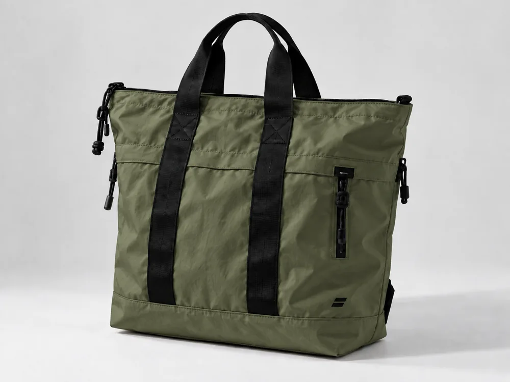

Маршрут 22
8,900 ₽22 л · Рюкзак для города и коротких поездок.


Шопер для планов, которые меняются на ходу. Вместительная сумка с длинными ручками, плоским дном и верхней молнией. Внешний карман позволяет быстро достать ключи или проездной.
4,900 ₽ демо-цена
Здесь показаны оба цвета одной модели без отдельных дублирующих страниц. Покупка доступна только как локальный демонстрационный сценарий.
22 л · Рюкзак для города и коротких поездок.

4 л · Самое нужное — рядом и под рукой.